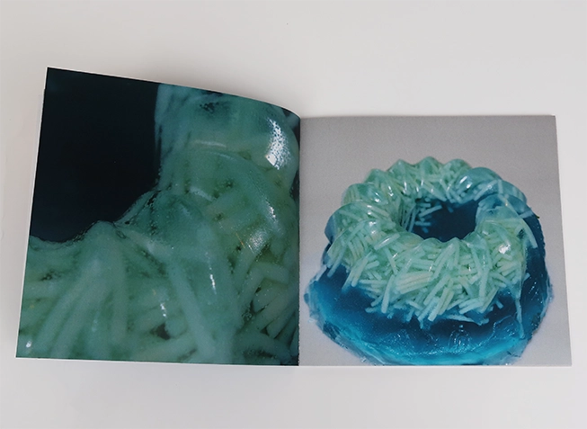
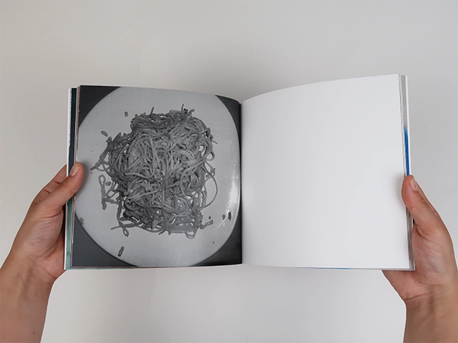
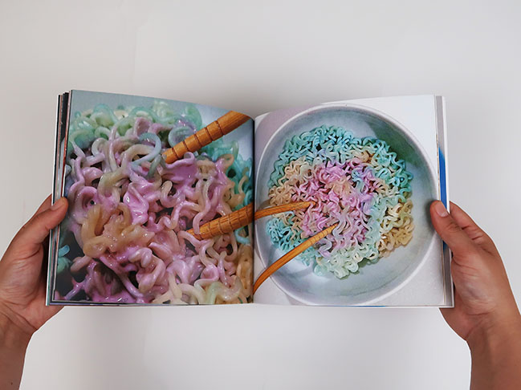

Menu
Un repas servi sans couleurs ? Est-ce vraiment appétissant ? Mon but était de questionner la place de la couleur présente dans nos assiettes. Pour se faire, d'une part j'ai décidé de prendre en photo les plats de mon quotidien en noir et blanc. D'autre part j'ai expérimenté des textures et des couleurs dans plusieurs ingrédients pour essayer de montrer que notre appétit peut être en parti guidé par l'apparence de notre assiette. Bon appétit !



